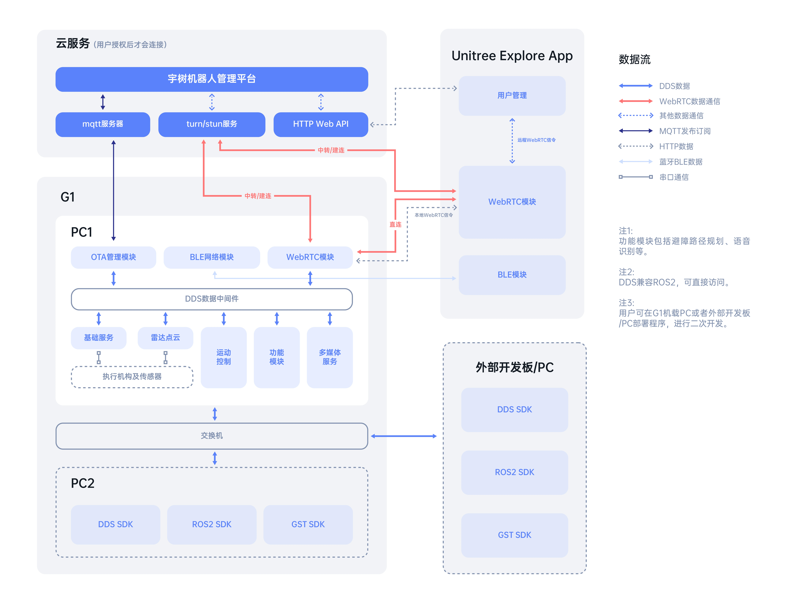

软件架构说明
系统架构图

用户授权后，G1 才会连接云服务
云服务
云服务主要有几个功能：
-
收集 G1 运行数据（不涉及隐私），进行故障检测和统计。
-
帮助用户实现远程操作，主要通过 WebRTC 实现。图像和控制流量可以点对点或通过 turn server 转发，服务器不会收集或分析这些流量。
-
系统升级迭代。
云服务的通信：
-
mqtt 用来建立与每台设备的物联网通信，负责监控故障、系统升级、传递 WebRTC 信令。
-
http 服务连接 App 和 Web 前端，建立用户与机器人的绑定关系。
-
turn/stun 服务器用来帮助 WebRTC 点对点连接，并在无法实现点对点连接时提供服务器数据转发。
G1
-
OTA 模块通过 mqtt 与云服务器通信，负责上传故障信息、系统升级、并转发 WebRTC 信令。
-
WebRTC 模块实现与 App 的主要数据管道，包括音视频流、雷达点云、运动状态及控制指令。
-
蓝牙( BLE )部分用来和 App 建立联系，主要用于配置网络和安全验证。
-
各个功能模块之间的通信主要采用DDS实现，DDS IDL 兼容 ROS2（需要选择适配的RMW），EDU 版本可以通过 DDS 或 ROS2 调用接口。
-
电机、雷达 等传感器数据通过串口收集再转发到 DDS 中间层。
-
G1-EDU版 内置 2 块计算单元，PC1 为 Unitree 运动控制程序专用，不对外开放。开发者仅可使用 PC2 进行二次开发。PC2的IP地址为192.168.123.164，初始用户名与密码请联系技术支持获取。
App
-
用户管理模块，通过 HTTP Web API 连接宇树管理平台。负责绑定机器人、 WebRTC 建连等功能。
-
G1 的蓝牙模块，用来配置网络。
-
WebRTC 模块，主要数据流量都是通过 WebRTC 实现，包括图传、点云、运动状态及控制指令下发。
开发接口
-
DDS，支持C++ 以及 Python。
-
ROS2 接口。
-
GST，仅用于图传。